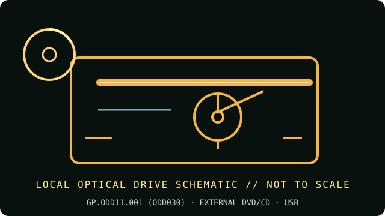

[ INDIVIDUAL COMPONENT // OPTICAL DRIVES ]
Acer Portable CD/DVD Writer GP.ODD11.001
Acer portable USB optical writer, also identified as ODD030 in its documentation. Match the GP.ODD11.001 part number printed on the underside; connector bundle and included software can vary by region.

IDENTIFICATION: Acer GP.ODD11.001 · Match the complete label, service code and manual revision before relying on a feature or installing firmware.
Verified specifications
| Catalog subcategory | External DVD writers |
|---|---|
| Exact product identifier | Acer GP.ODD11.001 (ODD030) |
| Supported DVD/CD formats | Reads and writes DVD±R/RW, DVD-ROM, DVD-RAM, CD-R/RW and M-DISC where supported by the selected disc. Dual-layer DVD media support is model-listed; compatibility with the host’s playback software is separate. |
| DVD read/write speeds | DVD-ROM read up to 8×; DVD±R write up to 8×; DVD±RW up to 6×; DVD-RAM up to 5×. |
| CD read/write speeds | CD-ROM read up to 24×; CD-R write up to 24×; CD-RW write up to 16×. |
| USB interface and power | External USB 3.0 link with USB Type-A/Type-C host connection options as supplied; USB-powered, no separate driver needed for typical mass-storage enumeration. USB 2.0 hosts negotiate a slower rate. |
| Compatibility, software and caveats | Acer lists Windows and Mac compatibility, but does not guarantee every operating-system release or disc application. DVD movie playback and authoring usually need separate compatible software; follow the manual’s connection/power guidance and avoid unpowered hubs if the drive disconnects. |
Use and preservation notes
- Close the tray and keep the drive level during operation; do not disconnect or remove a disc during an active write.
- Use known-good media and a conservative supported speed for archival copies. Finalize as appropriate and read back the disc; retain a checksum and log drive model, firmware, software, media ID and errors.
- Store optical media in protective cases away from heat, direct light, humidity, scratches and adhesive labels. Keep more than one verified copy.
Manufacturer and manual sources
- Acer — GP.ODD11.001 Portable CD/DVD WriterAcer product listing identifies the GP.ODD11.001 part and key features.
- Acer — official drivers and manuals locatorSearch the manufacturer support portal by exact part number for the matching manual/revision.
Advertised maxima are media-dependent drive ratings, not guarantees of a successful burn or recovery from damaged/aged media. Exact host and software support can change by region and operating-system release.